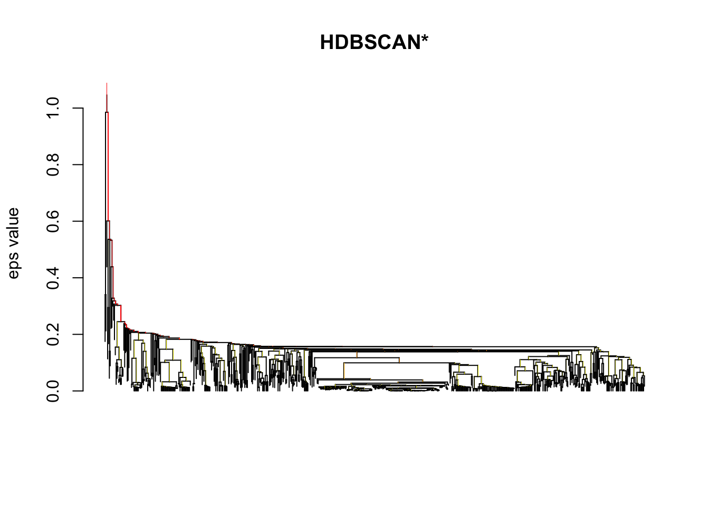
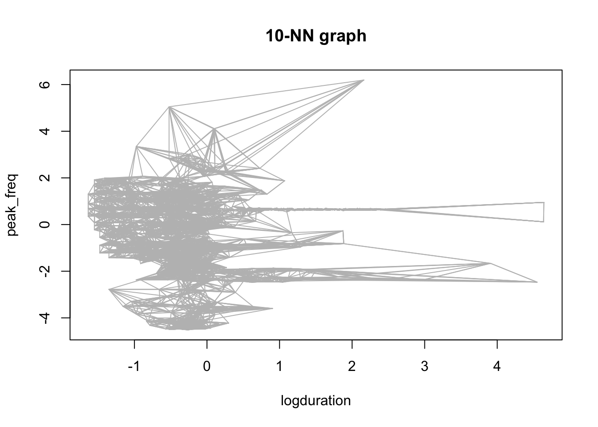
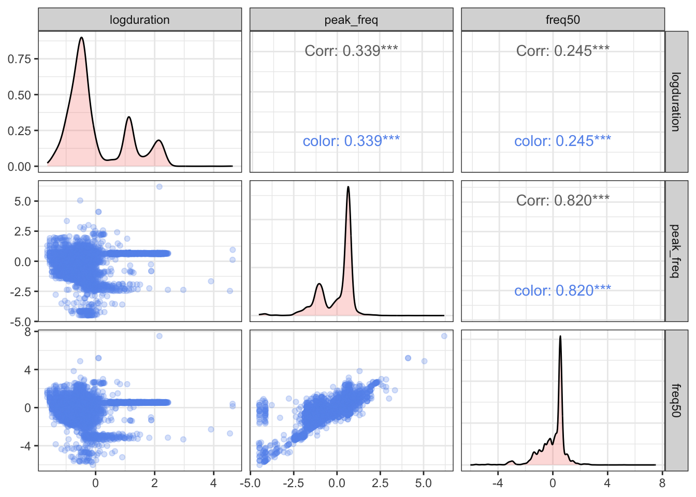
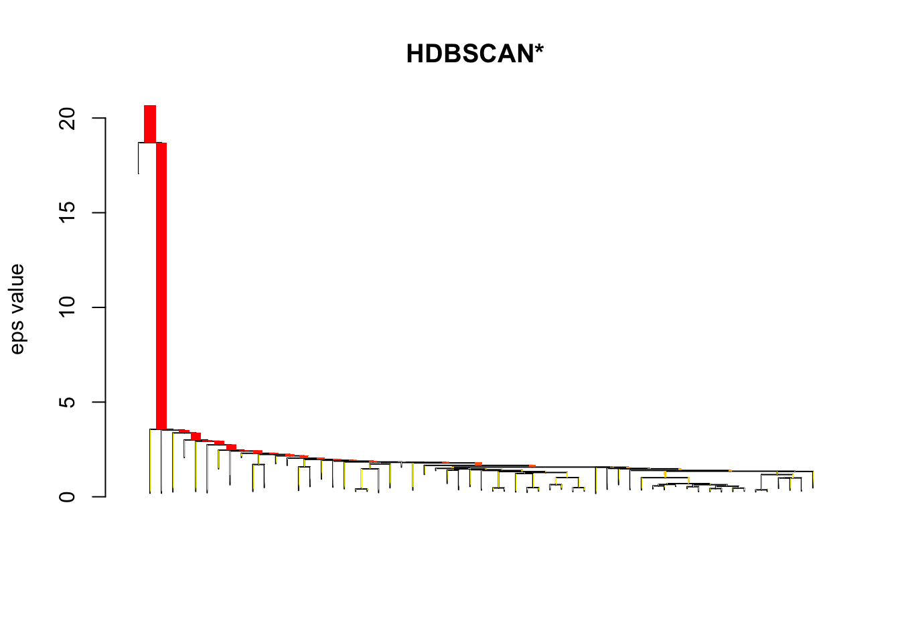
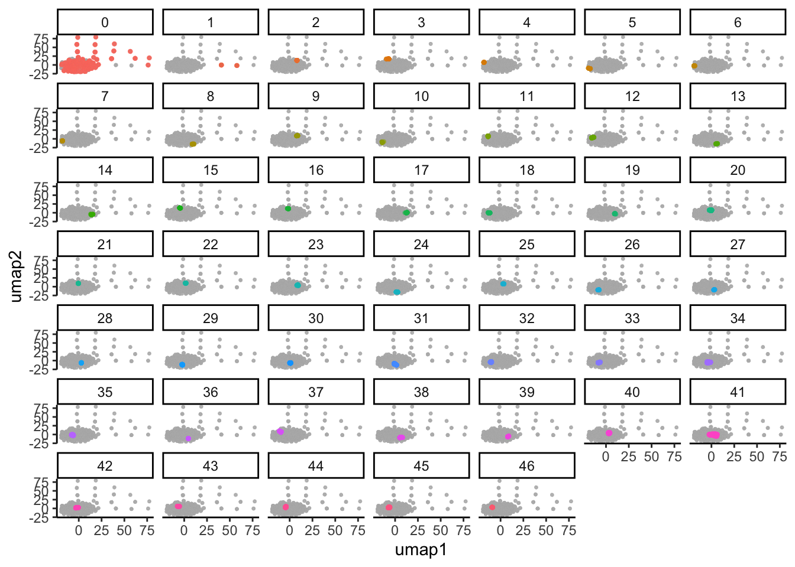
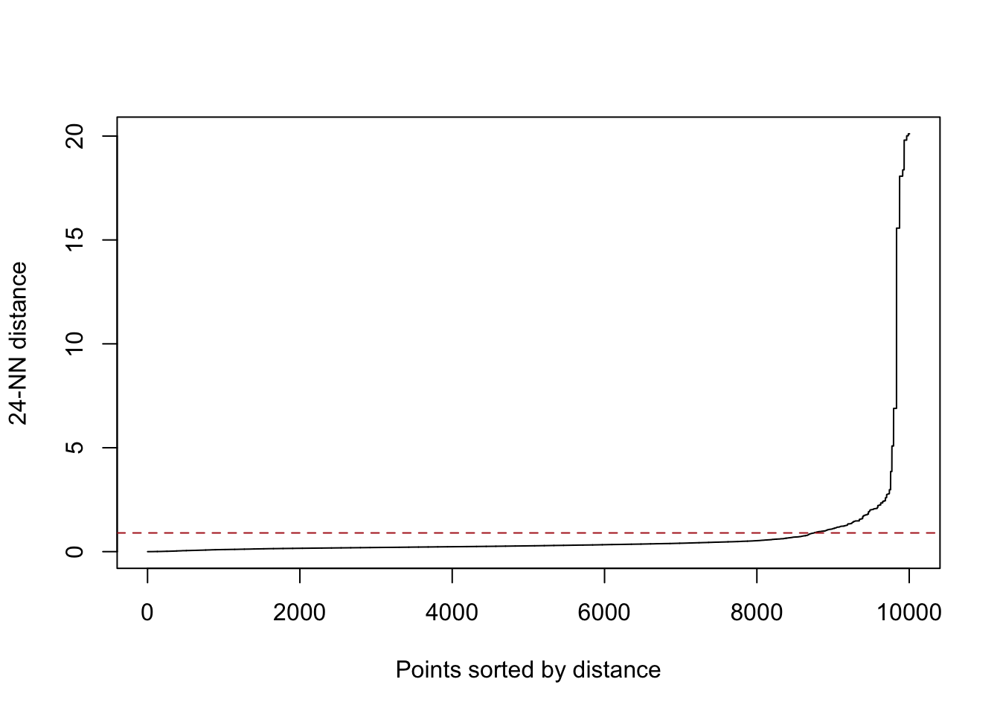
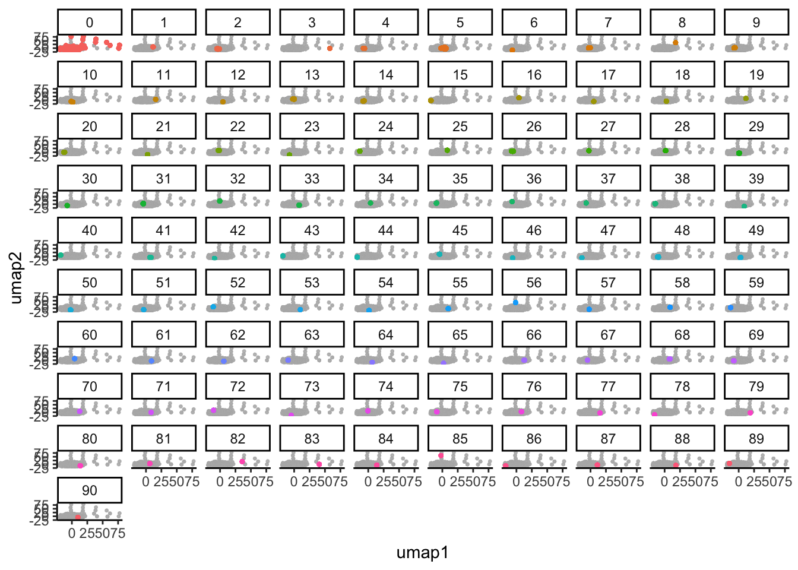

library(tidyverse)
library(dbscan)Beaked whale click detection
Classification
Attempting to translate Sam’s Julia code into R.
First up: read, sample, and standardize the features
#read in a feather file. every feather file holds a day.
clicks <- dir(here::here("data"), pattern = "features_.*feather", full.names = TRUE) %>%
map(arrow::read_feather) %>%
list_rbind() %>%
#selecting the four features that Sam used to cluster: duration, peak frequency, peak bandwidth, and transforming duration to log(duration)
mutate(logduration = log(duration)) %>%
select(logduration, peak_freq, freq50)
# select(logduration, peak_freq, peak_bw, freq50)
archetypes <- read_csv(here::here("data/click_archetypes.csv")) %>%
mutate(duration = duration / 1000, # convert ms to s
peak_freq = peak_freq * 1000,
freq50 = freq50 * 1000,
logduration = log(duration)) %>%
select(logduration, peak_freq, freq50)Rows: 4 Columns: 5
── Column specification ────────────────────────────────────────────────────────
Delimiter: ","
chr (1): label
dbl (4): duration, peak_freq, bw_10db, freq50
ℹ Use `spec()` to retrieve the full column specification for this data.
ℹ Specify the column types or set `show_col_types = FALSE` to quiet this message.# sample 10k clicks
set.seed(1407)
click_sample <- slice_sample(clicks, n = 1e4) %>%
rbind(archetypes)
#normalize everything by z score (sam did along 0-1)
z_score <- function(x) {
stopifnot(sum(!is.na(x)) > 3)
(x - mean(x, na.rm = TRUE)) / sd(x, na.rm = TRUE)
}
click_norm <- mutate(click_sample, across(everything(), z_score))HDBSCAN is a neighborhood based clustering algorithm. It takes one parameter, minPts, which sets a minimum for cluster size. Let’s set minPts to 100.
click_minPts <- 5
hdb_clicks <- hdbscan(click_norm, minPts = click_minPts)
plot(hdb_clicks)
foo <- kNN(click_norm, k = 10)
plot(foo, click_norm)
#cl <- optics(click_norm, minPts = 10)What do the normalized click features look like in space? Use a pairs plot to visualize.
library(GGally)Registered S3 method overwritten by 'GGally':
method from
+.gg ggplot2ggpairs(click_norm, mapping = aes(color = "color", alpha = "alpha")) +
scale_color_manual(values = "cornflowerblue") +
scale_alpha_manual(values = 0.25) +
theme_bw()
Reduce from 4 dimensions to 2 using UMAP
library(umap)
click_umap <- umap(click_norm, n_components = 2)Warning: failed creating initial embedding; using random embedding insteadclick_umap_df <- as.data.frame(click_umap$layout)
colnames(click_umap_df) <- c("umap1", "umap2")
archetypes_umap <- click_umap_df[(nrow(archetypes) - 3):nrow(archetypes), ]
click_umap_hdb <- hdbscan(click_umap_df, minPts = 50)
plot(click_umap_hdb)
click_umap_df <- click_umap_df %>%
mutate(cl = click_umap_hdb$cluster,
prob = click_umap_hdb$membership_prob)
ggplot(click_umap_df, aes(umap1, umap2)) +
geom_point(data = select(click_umap_df, -cl), color = "grey70", alpha = 0.1, size = 0.5) +
geom_point(aes(color = factor(cl), alpha = prob), size = 0.8) +
facet_wrap(~factor(cl)) +
theme_classic() +
theme(legend.position = "none")
ggsave(here::here("figs/umap_hdbscan.pdf"), height = 6.5, width = 9)click_umap <- umap::umap(click_norm, n_components = 2)Warning: failed creating initial embedding; using random embedding insteadclick_umap_df <- as.data.frame(click_umap$layout)
colnames(click_umap_df) <- c("umap1", "umap2")
minPts <- 25
kNNdistplot(click_umap_df, k = minPts - 1)
# Find the "knee" by eyeballing the (k-1)NN plot
click_eps <- 0.9
abline(h = click_eps, col = "firebrick", lty = 2)
click_umap_dbscan <- dbscan(click_umap_df, eps = click_eps, minPts = minPts)
click_umap_dbscanDBSCAN clustering for 10004 objects.
Parameters: eps = 0.9, minPts = 25
Using euclidean distances and borderpoints = TRUE
The clustering contains 90 cluster(s) and 1134 noise points.
0 1 2 3 4 5 6 7 8 9 10 11 12 13 14 15
1134 44 567 30 312 1910 46 313 32 280 512 39 51 336 231 66
16 17 18 19 20 21 22 23 24 25 26 27 28 29 30 31
40 59 78 30 84 68 66 44 101 65 151 45 61 154 42 234
32 33 34 35 36 37 38 39 40 41 42 43 44 45 46 47
40 61 31 68 63 31 91 45 54 83 46 29 54 66 39 49
48 49 50 51 52 53 54 55 56 57 58 59 60 61 62 63
217 71 92 35 58 25 42 58 37 33 37 46 36 49 36 49
64 65 66 67 68 69 70 71 72 73 74 75 76 77 78 79
32 27 67 37 68 45 30 28 35 26 57 56 42 26 35 28
80 81 82 83 84 85 86 87 88 89 90
33 36 36 39 49 25 43 25 25 26 32
Available fields: cluster, eps, minPts, metric, borderPointsclick_umap_df$cl <- factor(click_umap_dbscan$cluster)
ggplot(click_umap_df, aes(umap1, umap2)) +
geom_point(data = select(click_umap_df, -cl), color = "grey70", alpha = 0.1, size = 0.5) +
geom_point(aes(color = cl), size = 0.8) +
facet_wrap(~cl) +
theme_classic() +
theme(legend.position = "none")
ggsave(here::here("figs/umap_dbscan.pdf"), height = 6.5, width = 9)match filter for echosounder clicks - 38 kHz
or focus on a time when there is no echosounder and there are beaked whales. check the visual browser.